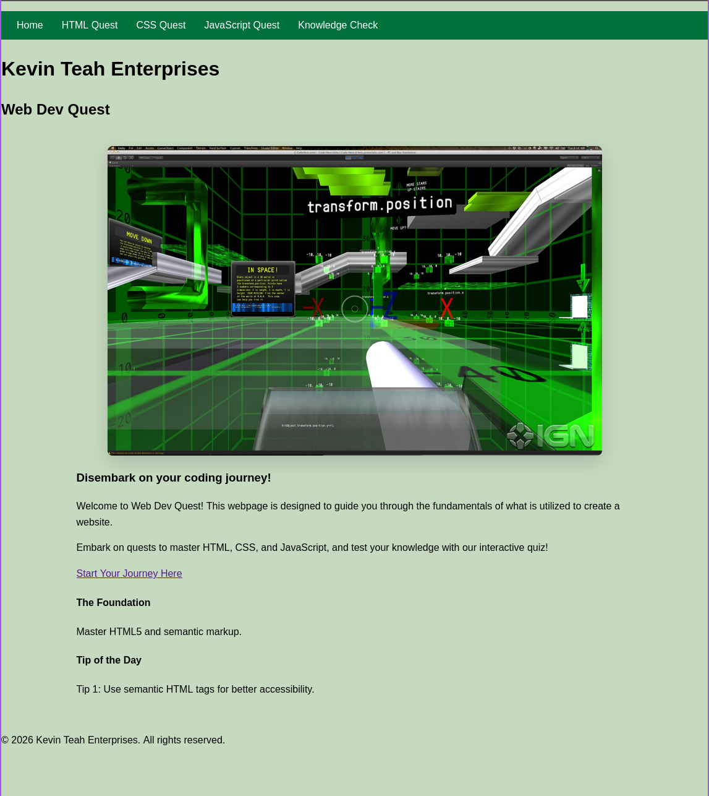

Peer Review 2
Constructive feedback meant to encourage progress, improvement, and stronger project completion.
Student Being Evaluated
Teah, Kevin
Website Reviewed

Evaluation
- The submission leads directly to the homepage, which is good because it gives the reviewer an immediate starting point.
- The site has a clear identity and theme, and the overall purpose of the project can be understood from the homepage.
- The homepage includes actual content and does not appear to be empty, which is important for this part of the project.
- The content and branding give the site a clear direction and make the project idea understandable.
- The page is readable and has a straightforward layout that helps users understand the topic.
- A strength of the project is that the homepage introduces the topic in a way that feels welcoming and easy to follow.
- One thing to review carefully is whether all five required pages are completed and easy to access from the navigation bar.
- The assignment requires a consistent and working navigation bar on all pages, so that is something worth double-checking throughout the site.
- It would be helpful to confirm that the site includes four additional pages with real content related to the website’s purpose.
- The page should also be checked against the website checklist to make sure it includes a proper header, main, and footer structure.
- The header should contain the site name in an h1, and the page title inside the main should appear as an h2.
- A consistent tagline somewhere on each page would also help strengthen the branding and meet checklist expectations.
- The footer should be reviewed to make sure it includes a menu and working HTML and CSS validation links.
- Overall, this project has a strong concept and a solid beginning, and with more assignment-specific details completed, it can become much stronger.